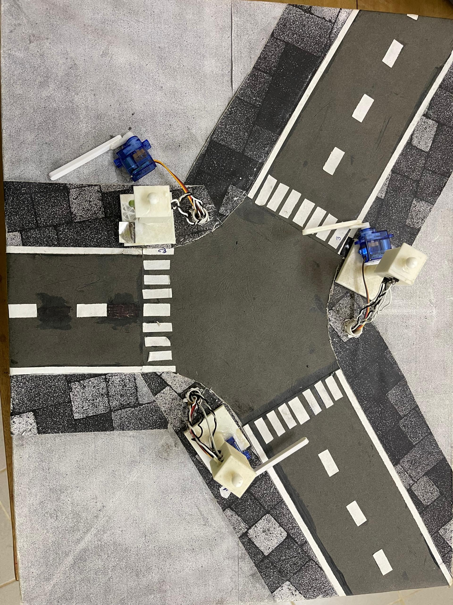

1. Vision & Objectifs
1. Contexte et motivation
Au Bénin, un grand nombre dʼaccidents routiers est dû au non-respect des feux de signalisation, et ce malgré la présence des forces de lʼordre.
Pour améliorer la sécurité routière, nous proposons un système capable dʼimposer physiquement lʼarrêt des conducteurs grâce à une barrière synchronisée avec les feux tricolores – tout en laissant passer les véhicules prioritaires (VP) grâce à une détection intelligente.
2. Objectifs du projet
Objectif général
Mettre en place un système automatisé permettant de réguler la circulation en contraignant les usagers à respecter les feux tricolores via une barrière mécanique pilotée par un microcontrôleur.
Objectifs spécifiques
-
Détecter les véhicules prioritaires et leur attribuer un niveau de priorité.
-
Modéliser le système en 3D et fabriquer les pièces nécessaires.
-
Concevoir le circuit électronique complet (capteurs, actionneurs, alimentation, VEROBOARD.
3. Description du fonctionnement
Nous considérons une intersection à trois voies. Chaque voie est équipée : - dʼun feu tricolore,
-
dʼune barrière motorisée contrôlée par le microcontrôleur,
-
d'un capteur de détection de véhicule prioritaire.
Logique de fonctionnement normale
Feu vert → barrière relevée.
Feu rouge → barrière abaissée pour empêcher tout passage.
Feu orange → barrière en cours de descente.
Gestion des véhicules prioritaires (VP)
Lorsquʼun véhicule prioritaire est détecté sur une voie :
-
si le feu est rouge, il passe automatiquement au vert et la barrière se relève ;
-
les autres voies passent au rouge et leurs barrières se baissent ;
-
en cas de détection simultanée de plusieurs véhicules prioritaires, le système choisit automatiquement celui ayant la priorité la plus élevée.
4. Progrès actuels
-
Prototype du système réalisé en carton, recouvert de papier, avec feux et barrières imprimés en 3D.
-
Algorithme de gestion des feux et des barrières déjà implanté Arduino).
Voici le modèle actuel:

5. Plan de réalisation
Étape 1 — Reprise et amélioration du code actuel
Étape 2 — Reconnaissance des véhicules prioritaires
Méthode 1 : Détection par reconnaissance sonore via IA
-
Identifier les grandeurs mesurables permettant de caractériser un son (fréquence, intensité, spectre, MFCC, etc.)
-
Étudier le fonctionnement du capteur audio.
-
Collecter les sons des différents véhicules prioritaires locaux (ambulance béninoise, police, sapeurs-pompiers…).
-
Réaliser une analyse exploratoire (spectrogrammes, MFCC, pics fréquentiels).
-
Choisir un modèle adapté CNN 1D, CNN 2D avec spectrogrammes, LSTM, etc.
-
Entraîner, valider et tester le modèle.
Méthode 2 : Détection par capteur de reconnaissance vocale
-
Étudier le fonctionnement du capteur et valider sa compatibilité microcontrôleur.
-
Collecter les sons des véhicules prioritaires.
-
Tester la reconnaissance en conditions réelles dʼintersection.
Étape 3 — Intégration complète dans lʼalgorithme de contrôle
-
Synchronisation entre reconnaissance sonore, feux tricolores et barrières.
-
Gestion des priorités multiples.
-
Tests sur maquette.
Etape 4 — Améliorations prévues
Ajout de relais pour transférer le son jusquʼau microcontrôleur
Permet de stabiliser la capture audio et d'éviter les perturbations.
Ajout dʼune caméra pour vérifier lʼidentité du véhicule
Ce point répond au cas de lʼimposteur :
-
Un véhicule non prioritaire pourrait émettre une sirène artificielle pour tromper le système.
-
Placer la camera à lʼintersection des trois routes et permettre à cette dernière de faire un angle de 360°
Ainsi :
-
Une caméra ou un lecteur code-barres / QR est ajoutée.
-
Chaque véhicule prioritaire possède un identifiant visuel QR, marque distinctive.
Si le son détecté ne correspond pas au véhicule vu par la caméra → suspicion dʼimposture.
Le système peut alors capturer la plaque dʼimmatriculation pour enregistrement.
Etape 5 — Modélisation 3D et impression
-
Conception CAO complète du système (supports, feux, barrière, structure).
-
Impression 3D des pièces.
Etape 6 — Conception du circuit imprimé (PCB)
-
Architecture électronique : capteurs audio, caméra, microcontrôleur, servomoteurs, relais…
-
Schéma électronique puis routage PCB.
-
Fabrication et test.
-
Utiliser une alimentation se chargeant à partir dʼenergie solaire